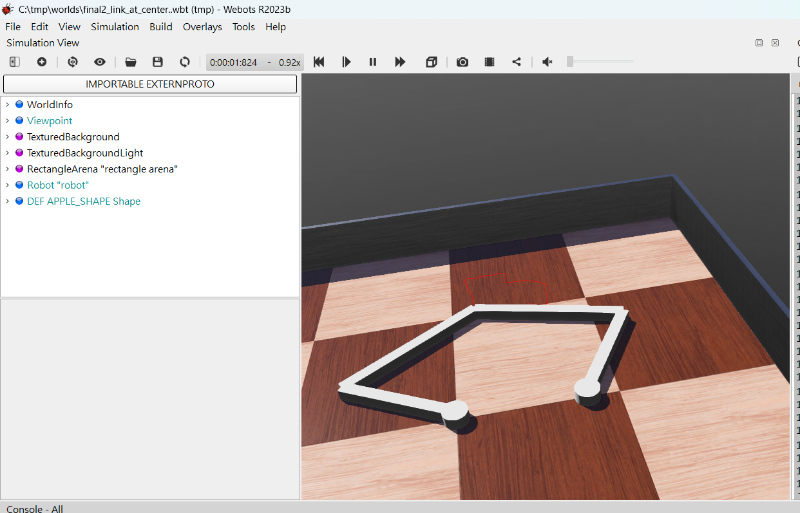
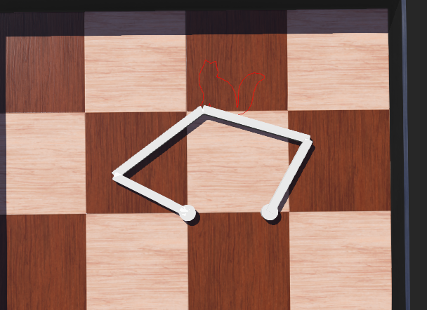
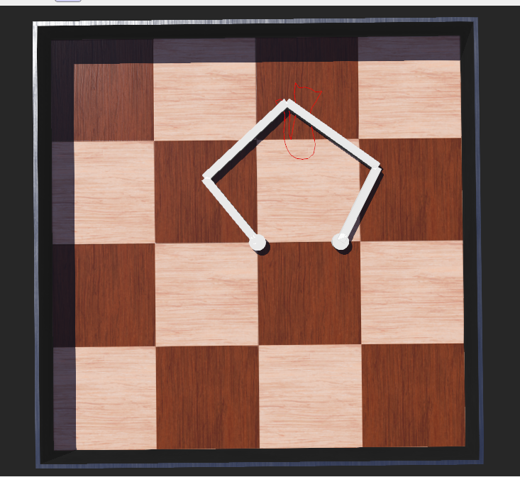
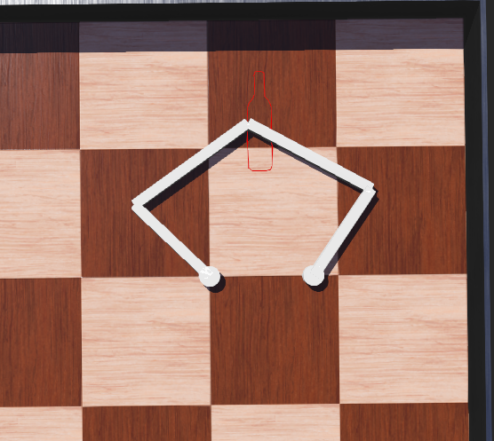

About <<
Previous Next >> 41123250
41123101
https://youtu.be/0Zpx0mrihlU

https://youtu.be/0Zpx0mrihlU
plotter練習的影片
bear

cat 2

cat

bottle

第一次plotter製作失敗
https://youtube.com/shorts/xpL3BjDS5KM
後續再做一次有成功
https://youtu.be/hpwiInBvbLg

測試將 SolidReference 從 joint4 轉移到 joint3(成功)
https://youtu.be/a1PRMPTzwj0
心得:
1. 跟 Plotter 戰鬥的日子 一開始做 Plotter（繪圖機） 的時候真的很有挫折感。我還記得第一次做出來的模擬影片完全是失敗的，機構卡住、動作不順。但我把那些「失敗畫面」都記錄下來，透過不斷調整零件尺寸，最後終於在 Webots 裡面看到它成功跑起來的那一刻，真的很有成就感！
2. 這學期最讓我頭大的就是 Git 衝突。尤其是跟組員一起改東西的時候，常常一拉（Pull）下來就是滿畫面的紅字衝突。
- 我學會了怎麼看那些像外星語的
<<<<<<< HEAD。
- 搞懂了「先拉 (Pull) 再推 (Push)」的黃金法則。
- 雖然中間幾次差點想直接
--force 暴力解決，但最後能靠自己手動解開那些「修改/刪除衝突」，讓終端機顯示 working tree clean，那種「我變強了」的感覺超真實。
3. 從實作中看見成果 把自己的開發過程轉成靜態網頁（Convert）很有趣。雖然過程中會因為自動產生的 js 檔案一直衝突，但也讓我理解到大型網站背後的索引是怎麼運作的。看到自己的照片、影片和心得最後成功部署到 GitHub Pages 上，讓別人也能看到我的成果，這就是對這學期最好的總結。門課教會我最重要的一件事：「遇到報錯不要慌，看懂 hint 是解決問題的開始。」 從一開始看到報錯會手抖，到現在可以冷靜地 git status 檢查狀態，我覺得自己在邏輯思考和耐性上都進步了很多。
About <<
Previous Next >> 41123250